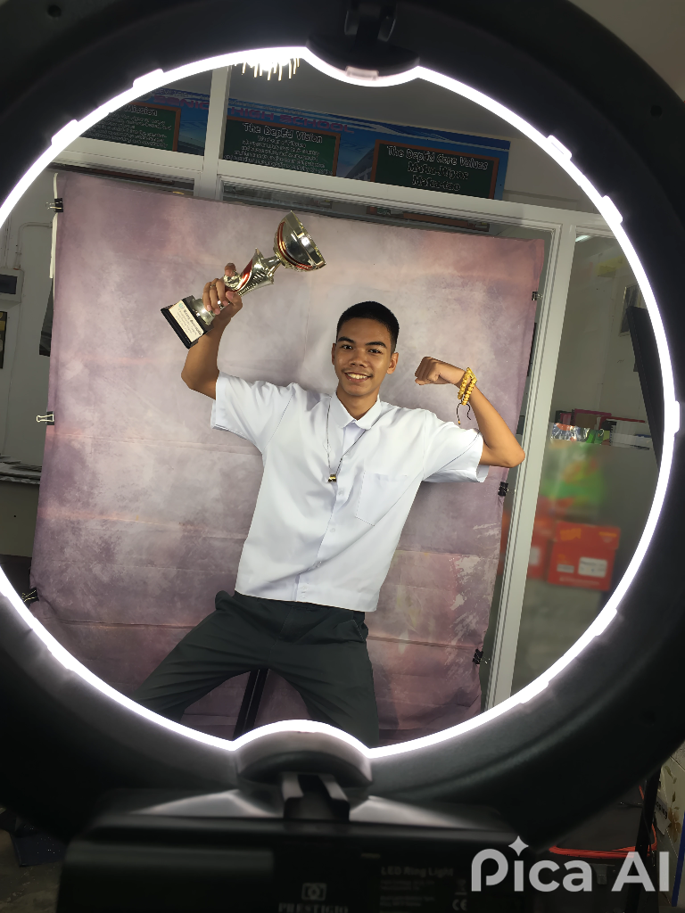

About Me
Learn more about who I am and what I value.

Chris Anthony Pancho Daugdaug
I'm a web designer and developer with a passion for crafting beautiful, responsive, and user-focused websites. I specialize in blending technology and creativity, bringing ideas to life through design and code.
| Full Name: | Chris Anthony Pancho Daugdaug |
|---|---|
| Age: | 18 |
| Location: | Philippines |
| Email: | clashingclash562@gmail.com |
More About Me
- I enjoy solving problems with logical and creative thinking.
- My favorite hobbies include chess, ethical hacking, and scripting.
- I aspire to work in cybersecurity and create helpful digital tools.
- I love collaborating and learning from other developers.
- I'm driven by curiosity, innovation, and continuous growth.